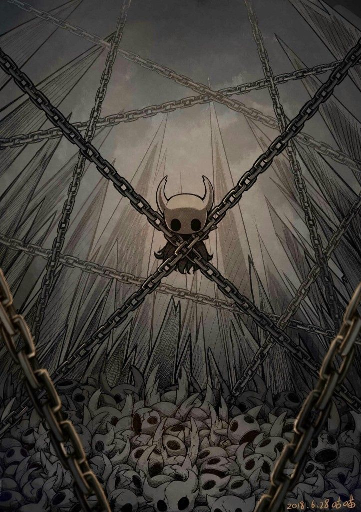
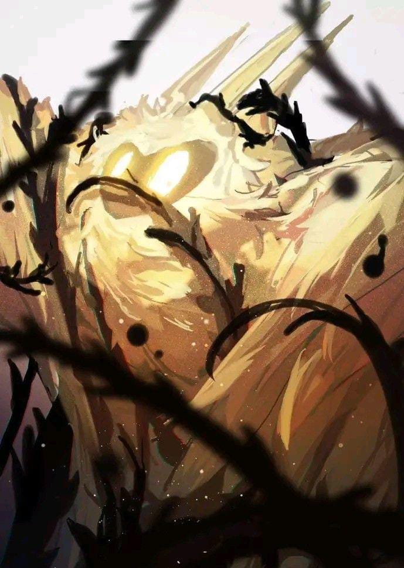
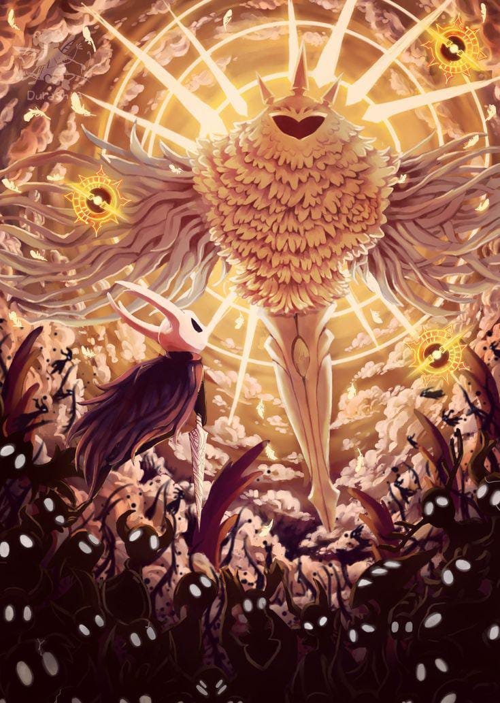

Lore / História
Há muito tempo, existia um vasto reino subterrâneo chamado Hallownest, um mundo antigo
repleto
de cavernas, cidades esquecidas e inúmeras espécies de insetos inteligentes. Cada região
possuía
sua própria vida, cultura e mistérios, formando um reino diverso que prosperava abaixo da
superfície.
No centro espiritual desse mundo havia uma entidade ancestral: a Radiância. Um ser feito de
luz
pura, reverenciado como uma deusa antiga. Sua presença influenciava os sonhos e pensamentos
dos
habitantes, guiando-os através de uma consciência compartilhada. Durante eras, sua luz foi
símbolo de ordem, tradição e unidade entre todas as criaturas do reino.
Mesmo com o passar do tempo e com as mudanças naturais do mundo, a Radiância permaneceu como
a
figura divina mais importante do passado de Hallownest, moldando crenças, rituais e a
própria
essência do reino. Antes de qualquer outra coisa, Hallownest foi construído sobre a luz dela
— a
antiga guardiã dos sonhos.
🌕 A ascensão do Rei Pálido
Com o passar do tempo, uma figura misteriosa surgiu: o Rei Pálido, um Higher Being vindo de
terras distantes, cuja verdadeira forma era a de um antigo Wyrm, criaturas quase mitológicas
do
mundo antigo. Ao abandonar seu corpo colossal e renascer em uma forma menor e mais delicada,
ele
pôde caminhar entre os insetos como um governante próximo e atento.
O Rei Pálido trouxe consigo algo que transformaria Hallownest para sempre. Ele concedeu aos
insetos consciência individual, capacidade de raciocínio ampliada e um senso de identidade
que
nunca haviam experimentado sob a influência da Radiância. Onde antes existia uma mente
coletiva
guiada pela luz, agora surgia a possibilidade de livre-arbítrio, de escolhas próprias e de
evolução.
Maravilhados com esse novo potencial, muitos insetos passaram a segui-lo, reconhecendo-o
como um
guia superior. Cidades foram erguidas, civilizações se organizaram e o reino começou a
prosperar
sob sua sabedoria. Dessa mudança profunda nasceu o grandioso Reino de Hallownest, símbolo do
avanço e da mente desperta.
Mas a antiga deusa não aceitou ser esquecida.
🔥 O renascimento da Radiância e o início da Infecção
Tomada pelo ressentimento e pela perda de seus seguidores, a Radiância tentou recuperar sua
influência sobre os insetos de Hallownest. Determinada a retomar o controle que antes
possuía,
ela voltou a se infiltrar nos sonhos das criaturas, espalhando sua presença luminosa como
uma
chama que se recusa a apagar. Sua luz antiga, agora distorcida pela raiva, começou a se
manifestar sob a forma de uma energia alaranjada e brilhante: a Infecção.
Essa Infecção logo se espalhou pelo reino, afetando não apenas a mente, mas também o corpo
dos
insetos. Ela distorcia emoções, despertava impulsos perigosos e transformava criaturas
pacíficas
em versões violentas e descontroladas de si mesmas. Em muitos casos, o corpo inteiro se
corrompia, ficando frágil, instável e quebradiço. Em situações ainda mais terríveis,
cadáveres
esquecidos eram animados novamente, movidos apenas pela influência da Radiância.
Ao observar o avanço devastador dessa força, o Rei Pálido percebeu que a Radiância não podia
ser
destruída — sua natureza divina a tornava eterna. No entanto, havia uma alternativa: ela
poderia
ser selada, presa longe do mundo desperto e impedida de continuar espalhando sua
contaminação.
⚔️ A criação dos Vessel
O Rei Pálido desceu até o Abismo e ali iniciou uma das criações mais sombrias e complexas de
Hallownest: os Vessels. Milhares deles foram gerados a partir do vazio puro, moldados para
serem
seres completamente silenciosos, sem emoções, sem identidade e sem qualquer traço de vontade
própria. Eram corpos perfeitos, mas desprovidos de alma — recipientes criados apenas para
cumprir um propósito.
Cada Vessel surgia do Abismo como uma pequena forma frágil, mas totalmente imune à
influência da
Radiância. Por não possuírem mente ou sentimentos, eram incapazes de sonhar, e portanto,
incapazes de serem corrompidos pela Infecção. Essa ausência de interioridade era justamente
o
que os tornava valiosos.
Entre todos eles, o Rei buscava um Vessel verdadeiramente puro, um recipiente totalmente
vazio,
perfeito o suficiente para conter a Radiância dentro de si e mantê-la aprisionada para
sempre.
Somente um ser assim poderia impedir que a deusa continuasse invadindo o reino e destruindo
Hallownest.
👑 O Hollow Knight
Entre milhares de crianças que surgiam do Abismo, apenas um Vessel mostrou a pureza que o
Rei
Pálido desejava. Ele foi escolhido e passou a ser conhecido como o Hollow Knight. O rei o
levou
para longe do Abismo, separando-o dos outros Vessels e tratando-o como uma criação especial,
destinada ao papel mais importante do reino.
O Hollow Knight foi treinado e moldado com extremo cuidado para se tornar o recipiente
perfeito.
Em silêncio absoluto, seguia o Rei Pálido sem questionar, sem demonstrar emoção ou vontade
própria — ou ao menos era isso que o rei acreditava. Ele deveria ser totalmente vazio, capaz
de
receber a Radiância dentro de si e mantê-la aprisionada para sempre.
Mas, quando o ritual foi concluído, um erro ficou claro: o Hollow Knight não era
completamente
vazio. Um pequeno resquício de consciência ainda permanecia dentro dele. Essa mínima fagulha
bastou para que a Radiância encontrasse uma brecha. Com o tempo, o selo enfraqueceu, e a
Infecção começou, lentamente, a retornar.
Essa imperfeição marcou o início da queda de Hallownest.

☠️ A queda de Hallownest
A Infecção voltou a se espalhar, dessa vez de forma lenta, silenciosa e inevitável. Ela se
infiltrava por cada canto de Hallownest, distorcendo sonhos, consumindo mentes e
transformando
antigos moradores em cascas vazias de si mesmos. Nem mesmo as regiões mais isoladas estavam
a
salvo
— a presença da Radiância crescia como uma chama impossível de apagar.
Diante do desastre, o Rei Pálido desapareceu sem deixar rastros, abandonando seu povo e o
próprio
reino que havia construído. Com sua ausência, restaram apenas aqueles que ainda tinham
forças
para
defender o grande selo.
Os Sábios Sonhadores — Monomon, Lurien e Herrah — dedicaram tudo o que tinham para manter a
Radiância contida por mais tempo. Eles sacrificaram seus próprios corpos, selando-se
eternamente
dentro do Mundo dos Sonhos, sustentando a barreira que impedia a Infecção de consumir tudo
de
uma
vez.
Mas, mesmo com sua determinação, nem esse sacrifício foi suficiente. Eventualmente, o selo
ruiu,
e
Hallownest caiu.
🕳️ O surgimento do Cavaleiro
Muito tempo depois da queda de Hallownest, quando o reino já não passava de ecos de um
passado
esquecido, uma pequena figura emergiu do Abismo: o Knight. Silencioso e misterioso, ele era
um
dos muitos Vessels criados pelo Rei Pálido — um irmão do Hollow Knight, moldado a partir da
mesma essência vazia.
Diferente de outros que sucumbiram ou permaneceram presos nas profundezas, o Knight
conseguiu
escapar para além das fronteiras do reino. Carregando apenas sua concha quebrada e sua
natureza
silenciosa, ele vagou por terras distantes até ouvir um chamado vindo das ruínas de
Hallownest —
um eco que o atraía de volta à sua origem.
Por ser um Vessel imperfeito de maneira diferente, o Knight é imune à Infecção e resistente
à
influência da Radiância. Assim, ele possui o potencial de fazer aquilo que o Hollow Knight,
mesmo preparado e treinado, não conseguiu cumprir completamente: enfrentar a Radiância e,
enfim,
selá-la ou destruí-la de uma vez por todas.
Final Ruim — “O Selo do Hollow Knight”
Com a ajuda de Hornet, o Cavaleiro evita ser selado e consegue romper a barreira que o
separa da
Radiância.
Ele entra no interior do Hollow Knight e enfrenta a verdadeira forma da deusa
no
mundo dos sonhos.Após uma batalha intensa, a Radiância é derrotada e se desfaz por completo,
fazendo a Infecção desaparecer de Hallownest. O reino, enfim, fica livre de seu domínio.

Final Verdadeiro — “Purificação”
Neste desfecho, Hornet impede que o Cavaleiro seja selado como novo recipiente. Com o selo
rompido, ele enfrenta a Radiância dentro do Hollow Knight no reino dos sonhos.
Após uma batalha intensa, derrota a deusa, dissipando sua influência e fazendo a Infecção
desaparecer de Hallownest. O Hollow Knight encontra descanso, e o reino finalmente fica
livre de
seu antigo fardo.

3- Final Godmaster — “Destruição Absoluta”
Neste desfecho, o Cavaleiro enfrenta a Absolute Radiance, a forma mais poderosa da deusa
antiga,
no mundo dos sonhos. Após uma batalha intensa, ele consegue derrotá-la completamente,
eliminando
sua influência de Hallownest de uma vez por todas.
Com a Radiância destruída, a Infecção desaparece, os Vessels perdem seu propósito e um novo
ciclo de paz finalmente se inicia no reino.

🌑 Resumo final
A Radiância era a deusa ancestral de Hallownest.
O Rei Pálido roubou seus seguidores oferecendo consciência.
A Radiância retaliou infectando o reino.
O Rei criou Vessels para selá-la.
O Hollow Knight foi escolhido, mas era imperfeito.
O selo falhou e o reino caiu.
O Cavaleiro surge para corrigir o erro.
Ele destrói a Radiância e liberta Hallownest da Infecção.
Regiões

Penhascos Uivantes (Howling Cliffs)
Localização: Leste de Greenpath, ao norte de Fungal Wastes.
Descrição: Altos penhascos com vento constante e plataformas perigosas.
Inimigos: Vengeflies e insetos voadores.
Segredos: Geo escondido, bancos e atalhos.
Dica: Use habilidades de movimento para atravessar abismos.

Dirtmouth
Localização: Entrada principal de Hallownest, situada no extremo oeste do reino.
Descrição: Uma pequena e silenciosa vila abandonada. É o primeiro local visitado pelo
jogador e
serve como ponto seguro durante a jornada. Com o avanço da aventura, novos NPCs começam a
aparecer, trazendo vida ao vilarejo.
Inimigos: Nenhum dentro da vila (área totalmente segura).
Segredos: Bancos, acesso ao Poço que leva para Forgotten Crossroads, itens vendidos pelo
Elderbug e comerciantes que podem surgir depois.
Dica: Retorne a Dirtmouth com frequência — novos NPCs trazem itens importantes, atalhos são
desbloqueados e é um ótimo ponto para reorganizar sua exploração.

Caminho Verde (Greenpath)
Localização: Região situada a sudoeste de Hallownest, acessível pelos Forgotten Crossroads
após
adquirir o Mapa ou encontrar Cornifer.
Descrição: Uma área vasta, viva e coberta por vegetação densa. Suas plataformas orgânicas,
lagos
ácidos e inimigos baseados em plantas criam um ambiente vibrante, porém perigoso. A região é
marcada por caminhos sinuosos, névoa verde e estruturas naturais.
Inimigos: Mosscreeps, Mossflies, Vengeflies verdes, Foly, Durandoos, entre outros inimigos
baseados em plantas e criaturas orgânicas.
Segredos: Máscaras ocultas, encantos, atalhos que se abrem ao explorar, áreas inferiores com
lagos ácidos, além de acesso a personagens importantes como Hornet e o Caçador.
Dica: Use cautela ao explorar — muitos inimigos de Greenpath atacam em investidas rápidas ou
explodem ao morrer. Domine movimentos curtos e saltos precisos para atravessar seus
desfiladeiros.

Cânion das Névoas (Fog Canyon)
Localização: Área situada entre Greenpath e Fungal Wastes, servindo como um corredor natural
entre várias regiões de Hallownest.
Descrição: Uma região enevoada e elétrica, tomada por medusas luminescentes e bolhas
explosivas.
O ambiente é estreito, cheio de passagens verticais e caminhos irregulares, dificultando a
navegação sem habilidades avançadas. Sua atmosfera verde-amarelada emite constantemente
pulsos
elétricos das criaturas que habitam o local.
Inimigos: Uomas, Oomas explosivos, medusas elétricas e pequenos organismos que liberam
descargas
ao serem atingidos.
Segredos: Passagens ocultas que levam à Queen’s Station, entradas para a Teacher’s Archives,
atalhos submersos e rotas que conectam áreas importantes. Alguns colecionáveis estão
escondidos
atrás de barreiras que só podem ser ultrapassadas com habilidades específicas.
Dica: Evite atacar inimigos explosivos de perto — muitos deles detonarão ao morrer, causando
grande dano. Aproveite a mobilidade e espere a abertura certa para cruzar áreas cheias de
descargas elétricas.

Cidade das Lágrimas (City of Tears)
Localização: Centro de Hallownest, acessível por diversas rotas, incluindo o topo dos Fungal
Wastes, Crystal Peak e áreas inferiores como Royal Waterways.
Descrição: Uma vasta cidade chuvosa construída sobre estruturas metálicas e altas torres. A
chuva constante, resultado do mecanismo do Palácio Branco, cria uma atmosfera melancólica e
grandiosa. É uma das maiores regiões do jogo, com múltiplos níveis, elevadores, pontes,
passagens fechadas e áreas nobres protegidas por cavaleiros.
Inimigos: Guardiões da cidade, Winged Sentries, Heavy Sentries, Lanceiros, Mistake, Fool
Eaters
e outros soldados mecanizados ou corrompidos.
Segredos: Diversos atalhos verticais, áreas ocultas que levam a encantos, memória do Rei
Pálido,
acesso ao Nailmaster para upgrades, rotas para King’s Station, Soul Sanctum, Watcher’s Spire
e
entradas escondidas para plataformas superiores.
Dica: Explore com calma e aproveite os elevadores para criar novos atalhos. A cidade é cheia
de
inimigos fortes, então fortalecer o prego e melhorar os encantos antes de explorar suas
partes
mais altas ajuda bastante.

Hidrovia Real (Royal Waterways)
Localização: Abaixo da Cidade das Lágrimas, acessível por entradas escondidas na parte
inferior
da cidade ou pela parte final das Fungal Wastes após usar uma Chave Simples.
Descrição: Um extenso sistema de esgotos e túneis inundados que servia como rede hidráulica
principal da capital. A região é escura, úmida e cheia de detritos, com corredores estreitos
e
criaturas deformadas pela Infecção. É uma área labiríntica, com caminhos que se
interconectam e
levam a zonas importantes do subsolo.
Inimigos: Flukemons, Flukefeys, Hwurmps, Bochlings, Shrumal Ogres e vários insetos mutados
pelas
águas contaminadas.
Segredos: Entrada para o Ninho das Flukes, passagem secreta para Isma’s Grove, acesso ao
palco
do Dung Defender, rotas que levam ao Ancient Basin, além de vários túneis destruídos que
escondem Geo e itens úteis.
Dica: Leve habilidades de mobilidade, como Mantis Claw e salto duplo, para atravessar áreas
inundadas e plataformas irregulares. Explorar bem o local é essencial para encontrar Isma’s
Tear, item que permite atravessar águas ácidas.

Ermos Fúngicos (Fungal Wastes)
Localização: Região central-oeste de Hallownest, situada entre Greenpath, City of Tears e
Deepnest. É geralmente acessada após obter a Mantis Claw ou por passagens vindas do Caminho
Verde.
Descrição: Uma vasta área subterrânea coberta por esporos, fungos gigantes e vapores
tóxicos. O
lugar tem um clima quente e abafado, com plataformas orgânicas que funcionam como trampolins
naturais. A região é habitada por tribos fúngicas e por insetos adaptados ao ambiente ácido
e
cheio de esporos.
Inimigos: Shrumal Warriors, Shrumal Ogres, Amblooms, Fungal Crawlers, Mantis Traitors (nas
profundezas), Sporgs e outras criaturas relacionadas a fungos.
Segredos: Acesso ao território das Mantis Lords, caminho para a Cidade das Lágrimas por
elevadores naturais, entrada para o Palácio da Alma (Soul Sanctum) através de passagens
escondidas, além de Encantos, Geo, rotas alternativas e salas secretas entre as cavernas de
esporos.
Dica: Os inimigos daqui usam ataques explosivos — manter distância e observar o padrão de
explosão dos esporos facilita muito. Aproveite para enfrentar as Mantis Lords, pois
derrotá-las
libera atalhos úteis e dá respeito permanente da tribo.

Pico de Cristal (Crystal Peak)
Localização: Região montanhosa localizada a leste de Dirtmouth e do Caminho Cruzado. O
acesso
principal exige o uso de uma Chave Simples para ativar o moinho ou a habilidade Mantis Claw
para
entrar pela lateral inferior.
Descrição: Uma enorme montanha de cristais rosados energizados, repleta de máquinas antigas
e
trilhas de mineração abandonadas. O local emite um brilho constante e possui trilhos,
elevadores
e mecanismos que parecem ter funcionado sem descanso por séculos. A atmosfera é acelerada,
com
plataformas que se movem rapidamente, feixes de luz cristalina e áreas que exigem precisão e
mobilidade.
Inimigos: Crystal Crawlers, Husk Miners, Shardmites, Glimbacks e especialmente os Crystal
Hunters, capazes de disparar feixes concentrados de energia cristalizada que atravessam
longas
distâncias.
Segredos: Entrada para o Crystal Heart, habilidade que permite o Super Dash; múltiplos
caminhos
conectando a partes altas da Cidade das Lágrimas; rotas para o Resting Grounds; além de
geodos
escondidos, plataformas secretas e áreas iluminadas apenas pelos cristais.
Dica: Traga bastante paciência — o Pico de Cristal é uma das regiões mais desafiadoras em
termos
de plataforma. Os lasers dos Crystal Hunters atravessam paredes, então mantenha-se atento ao
som
antes de avançar. Explorar bem vale a pena para obter o Crystal Heart e acessar zonas que
antes
eram impossíveis.

Terra do Descanso (Resting Grounds)
Localização: Área elevada situada ao leste dos Crossroads. Pode ser acessada após destruir
um
piso frágil em Forgotten Crossroads ou por rotas vindas do Pico de Cristal usando o Crystal
Heart.
Descrição: Um vasto cemitério espiritual coberto por névoa azulada e repleto de túmulos,
memoriais e estruturas antigas dedicadas aos sonhos. O clima é silencioso e sereno, com uma
trilha sonora suave que reforça o tom de reverência. A região é o lar dos Sábios dos Sonhos
e de
monumentos ligados à energia onírica utilizada pelos insetos de Hallownest.
Inimigos: Dream Warriors (enfrentados através do Dream Nail), espíritos hostis, Ghosts e
alguns
guerreiros corrompidos que aparecem após eventos específicos do jogo.
Segredos: Desbloqueio do Dream Nail com a Moth Seer, acesso aos túmulos dos Dreamers,
passagem
para o Soul Tyrant, rotas secretas que levam ao Crystal Peak e salas escondidas com Essência
e
itens especiais.
Dica: Retorne aqui frequentemente após obter o Dream Nail — novos espíritos aparecerão,
permitindo coletar Essência suficiente para conseguir recompensas únicas. Também é uma área
excelente para entender melhor a história profunda dos sonhos e do próprio Hallownest.

Bacia Antiga (Ancient Basin)
Localização: Abaixo das Hidrovias Reais, acessível por túneis profundos que levam ao extremo
sul
de Hallownest. É uma das áreas mais baixas e isoladas do reino.
Descrição: Uma região sombria, silenciosa e decadente, composta por ruínas antigas e
estruturas
desgastadas pelo tempo. A atmosfera é pesada e quase sem vida, marcada por ecos distantes e
pela
presença de restos de civilizações anteriores. A área conecta-se diretamente ao Palace
Grounds e
ao caminho que leva ao Abyss, revelando partes cruciais da história do Cavaleiro e dos
Receptáculos.
Inimigos: Shadow Creepers, Lesser Mawleks, Mawlurks e insetos enfraquecidos pela falta de
luz e
pela Infecção. A região também abriga um dos chefes mais importantes: o Broken Vessel.
Segredos: Atalho para o Abyss, acesso ao Palace Grounds, fragmentos de máscara e alma, áreas
ocultas com Geo, além de pistas sobre a origem dos Receptáculos e do Vazio. Também contém a
estação abandonada que liga a Bacia a outras partes de Hallownest.
Dica: Explore com calma e prepare-se para quedas longas — muitas partes da Bacia são
verticais e
levam diretamente a áreas mais perigosas. Após derrotar o Broken Vessel, você desbloqueia o
Monarch Wings (pulo duplo), uma das habilidades mais importantes de todo o jogo.

Ninho Profundo (Deepnest)
Localização: A oeste dos Ermos Fúngicos e ao sul de Hallowed Grove. É acessada por túneis
apertados e rotas escondidas que levam a uma das regiões mais temidas de Hallownest.
Descrição: Deepnest é a área mais sombria e aterrorizante de todo o reino. Um labirinto de
túneis orgânicos, infestado por aranhas, criaturas deformadas e insetos hostis. A iluminação
é
mínima, os sons são inquietantes e o terreno é propositalmente confuso, com buracos,
caminhos
falsos e paredes que se movem. É uma região baseada em tensão, medo e desorientação
constante.
Inimigos: Garpedes, Deephunters, Little Weavers, Carver Hatchers, e diversas criaturas
grotescas
que atacam de emboscadas. O local também é lar dos Weavers, uma antiga tribo conectada ao
Vazio.
Segredos: Rotas alternativas que levam aos Weaver’s Den, itens importantes como o Charm
Weaversong, passagens que conectam a Hot Springs secreta, atalhos para a Fungal Wastes e
para o
Kingdom’s Edge, além de áreas que revelam mais detalhes sobre os Weavers e suas artes.
Dica: Vá preparado — Deepnest testa sua paciência e resistência. Observe o ambiente, pois
muitos
inimigos se camuflam no chão ou nas paredes. Ande devagar, ouça os sons ao redor e mantenha
sempre sua vida alta para evitar morte por emboscada. O local é confuso, mas a exploração
compensa.

Colmeia (The Hive)
Localização: Situada ao sudeste de Kingdom’s Edge, acessível por uma parede quebrável
escondida
na região. É uma área completamente isolada, habitada exclusivamente por criaturas da
colmeia.
Descrição: A Colmeia é uma região composta inteiramente de estruturas naturais feitas de
cera
dourada. Seus corredores são brilhantes, quentes e pegajosos, criando um visual único dentro
de
Hallownest. Apesar do clima luminoso, a área é hostil e cheia de insetos defensores que
atacam
em grupo para proteger sua rainha e seu território.
Inimigos: Hive Soldiers, Hive Guardians, Hivelings e Hive Husks — todos extremamente
agressivos
e rápidos. O local também abriga o mini-chefe Hive Knight, protetor leal da colmeia.
Segredos: O encantamento Hiveblood, um dos mais úteis do jogo para exploração, corredores
escondidos com Geo, áreas secretas dentro da cera e passagens que conectam discretamente a
partes profundas de Kingdom’s Edge.
Dica: Tenha cuidado com inimigos voadores e investidas rápidas — muitos ataques vêm em linha
reta e com velocidade alta. Após derrotar o Hive Knight, explorar a região fica mais
tranquilo e
você ainda garante acesso ao poderoso Hiveblood.

Borda do Reino (Kingdom’s Edge)
Localização: Localizada ao extremo leste de Hallownest, acessível principalmente pelo Pico
de
Cristal ou por passagens profundas próximas à Cidade das Lágrimas. É uma das regiões mais
afastadas e isoladas do reino.
Descrição: Uma área vasta, fria e silenciosa, marcada por penhascos altos, ventos constantes
e
neve feita de cascas brancas — restos de antigos seres do reino. Kingdom’s Edge é repleta de
plataformas estreitas, cavernas profundas e estruturas desgastadas pelo tempo. A sensação
predominante é de vazio e abandono, reforçando a solidão das extremidades de Hallownest.
Inimigos: Hoppers, Great Hoppers, Primal Aspids, Booflies e outras criaturas selvagens que
habitam os penhascos. A região também contém encontros importantes, como Hornet (Segunda
Batalha) e o Coliseu dos Tolos, que fica no topo do acantilado.
Segredos: Áreas ocultas atrás de paredes destrutíveis, acesso ao Coliseu dos Tolos, itens
como
Charms, fragmentos de máscara e atalhos que levam a partes profundas da colmeia. Há também
pequenos segredos relacionados à lore de Hornet e do Rei Pálido.
Dica: Use bastante mobilidade — Kingdom’s Edge exige saltos precisos e cuidado constante com
inimigos que atacam de longe. O caminho até o Coliseu pode parecer longo, mas a recompensa
em
Geo e desafios compensa muito.
O Abismo (The Abyss)
Localização: Situado no ponto mais profundo de Hallownest, abaixo da Bacia Antiga. A entrada
só
pode ser aberta após adquirir o Monarch Wings e usar o Selo do Rei nos portões que bloqueiam
o
acesso.
Descrição: O Abismo é o coração sombrio do Vazio — um lugar proibido, esquecido e repleto de
energia negra pulsante. Suas cavernas são vastas, ecoantes e dominadas por sombras vivas que
rastejam pelas paredes. A região guarda o segredo da criação dos Receptáculos, revelando a
origem do Cavaleiro e o destino dos milhares de “irmãos” falhados que nunca despertaram. A
atmosfera é pesada, misteriosa e profundamente melancólica.
Inimigos: Shadow Creepers, Shade Tendrils e manifestações puras do Vazio. Não há criaturas
tradicionais — tudo que existe ali é parte da própria essência sombria que compõe os
Receptáculos.
Segredos:
• O Void Heart, item essencial para todos os finais avançados.
• Áreas escondidas com ecos de memória e projeções de figuras relacionadas ao passado do
Cavaleiro.
• Um lago gigantesco de Vazio ativo, capaz de reagir ao Receptáculo.
• Fragmentos de lore que revelam o experimento do Rei Pálido, o propósito dos Vessel e o
destino
da tribo dos Weavers.
• O santuário das conchas brancas, onde os Receptáculos eram moldados.
Dica: Vá preparado emocionalmente mais do que fisicamente — o Abismo não é uma área de
combate
intenso, mas sim de revelações. Explore tudo com calma: cada canto conta parte da história
mais
profunda e dolorosa de Hallownest. Após conseguir o Void Heart, seu vínculo com o Vazio muda
para sempre.